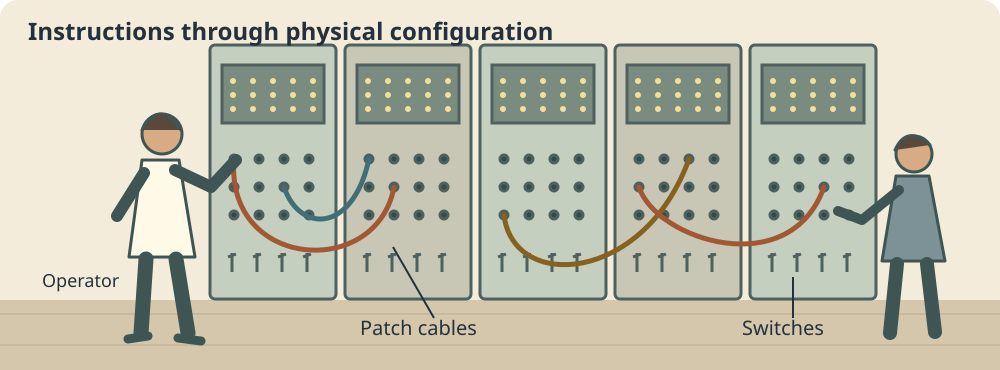
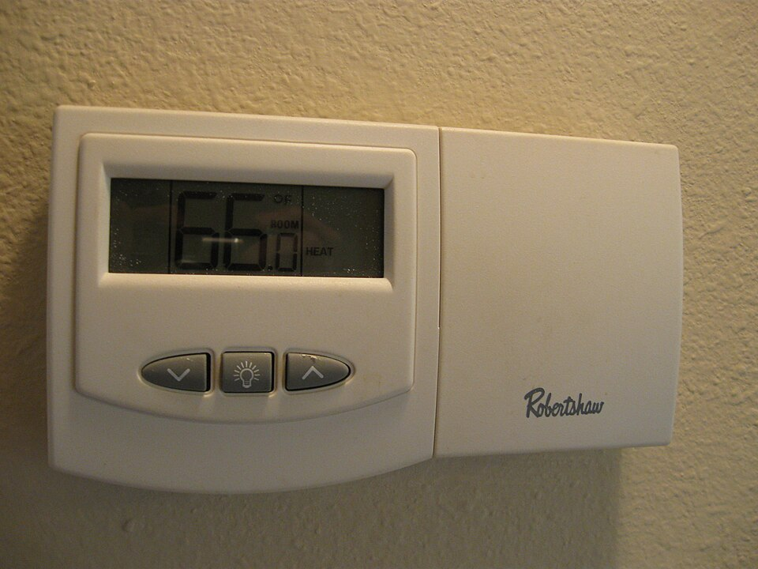
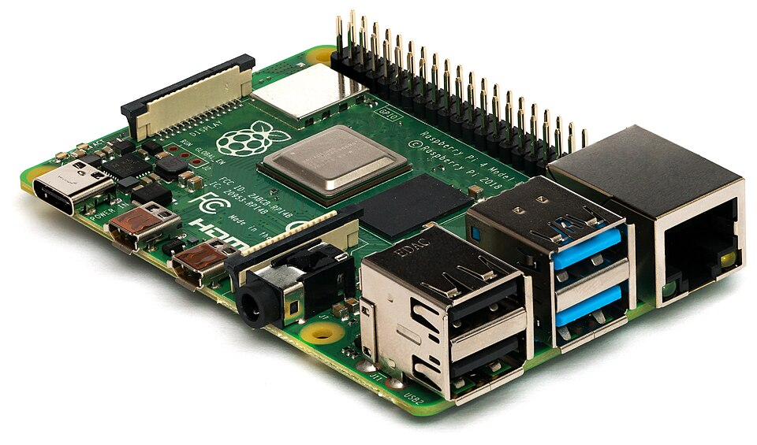

Stored-program architecture
How can the same computer run different programs?
- Explain the stored-program idea
- Distinguish instructions from data
- Compare shared and separate memory pathways
- Explain benefits and trade-offs in real devices
01 · Stored-program architecture
First, a problem from early computing
A familiar idea
One device. Many programs.
CalculatorMusic player
You change the program to change the job.
Now go back to the 1940s
Changing the job could mean changing the setup.
We will look at an early programming method to see why storing a program in memory was such a useful change.
02 · Stored-program architecture
Early ENIAC: set up the machine for the calculation
ENIAC was an early electronic computer used for long calculations. In its original programming approach, people connected cables and set switches to control the work.

- Plan the calculationDecide the operations and their order
- Configure and testConnect cables and set switches
- Change the taskRework the setup for a different calculation
More explanation and sources
This is an illustration, not an exact reconstruction of ENIAC. Its programming methods changed over its lifetime. The lesson uses its early approach to explain the benefit of stored instructions. Computer History Museum: ENIAC.
The stored-program idea
Keep the instructions in memory, ready for the processor to use.
03 · Stored-program architecture
Change the stored program to change the job
Earlier physical setup
● ━━ ●● ━╮ ●● ╰━ ●
Change connections and settingsStored-program approach
Calculation programMusic program
Same processor
Different stored instructions
Different stored instructions
A stored-program computer keeps program instructions in memory so the processor can fetch and execute them.
Fetch = get an instruction. Execute = carry it out.
04 · Stored-program architecture
Instructions say what to do. Data supplies the values.
A program is a set of instructions. An instruction tells the processor to perform an operation.
Program instructions
- Read the first number
- Add the next number
- Show the total
Data
53
The numbers the program works on.
Result
8“Add” is an operation. The numbers being added are data.
More explanation and sources
These are readable descriptions of operations, not a real machine-code listing. In a computer, instructions and data are both represented using binary patterns. Their role depends on how they are interpreted; they are not different kinds of bits.
05 · Stored-program architecture
Opening a program on a laptop
The processor is also called the CPU. It needs access to the instructions it is about to follow.
1 · Keep
SSD storage
Calculator programKept when the laptop is off.
Load→
2 · Prepare
Main memory · RAM
Program ready to runWorking memory while powered on.
Fetch→
3 · Use
Processor · CPU
Carry out instructionsProcess the numbers and results.
Storage keeps the program; memory makes it available; the processor runs it.
More explanation and sources
This is a typical laptop example. Some small devices run their instructions directly from non-volatile program memory, such as Flash, which retains them without power. Storing a program does not mean that it must permanently live in RAM.
06 · Stored-program architecture
The jobs every stored-program computer needs
Before choosing a memory arrangement, separate the roles of the parts.
Memory stores
InstructionsValues
Keep the program and the data it needs.
The processor acts
Read → Add → Show
Follow instructions and work on data.
Input and output connect
Numbers in → Result out
Receive inputs and present results.
07 · Stored-program architecture
A quick look inside the processor
These three names explain who does the work inside the CPU.
Processor · CPU
Coordinate
Control Unit
Interprets instructions and directs the operations.
“Get the values, then add.”Calculate
Arithmetic Logic Unit
The ALU performs arithmetic and logical operations.
5 + 3 = 8Hold current work
Registers
Very small, fast storage inside the CPU.
Hold a value such as 5 or a result such as 8.Memory stores the program. Parts inside the CPU work together to carry it out.
More explanation and sources
Later lessons explain the instruction cycle and named registers in detail. For this lesson, follow where instructions and data are stored and which pathways they use.
08 · Stored-program architecture
Two ways to organise memory access
A computer architecture describes how its main parts are organised and work together. Here we focus on memory and its connections to the CPU.
Both store programs. The difference is how instructions and data reach the processor.
A pathway, or bus, carries signals between components.
Von Neumann architecture
Shared memory access: useful simplicity, but possible competition.
09 · Stored-program architecture
Von Neumann: instructions and data share access
The classic model uses a shared memory system for instructions and data, with a shared pathway to the processor.
Shared memory
- InstructionNext instruction
- DataCurrent value
Shared pathway
Processor (CPU)
Fetch instructions
Use data
Produce results
Why this can help
A common memory organisation is simpler to work with; a shared RAM pool can hold different mixes of program and data.
The trade-off
Instruction and data requests may compete for the same transfer capacity.
More explanation and sources
The textbook model uses a common instruction/data address space. “Shared” does not require one physical chip or mean that all memory regions have the same technology. A common RAM pool can be allocated flexibly; Flash and RAM are not interchangeable just because they share a CPU interface.
10 · Stored-program architecture
Follow the instructions and values separately
Goal: add 5 and 3, then show 8. Watch what travels along the shared pathway.
Shared memory
- InstructionRead the first number
- InstructionAdd the next number
- InstructionShow the total
- Data5
- Data3
Shared pathway
Processor (CPU)
- Instruction
- Not fetched yet
- Working data
- No values yet
Display output—
1 of 8 · The program and its numbers are ready
The goal is to add 5 and 3, then display the total.
- The program and its numbers are ready The goal is to add 5 and 3, then display the total.
- Fetch an instruction The processor receives “Read the first number”.
- Read the data The same pathway now carries the value 5 into the processor.
- Fetch the next instruction “Add the next number” travels along that shared pathway.
- Read the next value The value 3 follows. The processor now has both numbers.
- Carry out the addition The ALU adds the values inside the processor.
- Fetch the final instruction The processor receives “Show the total”.
- Show the result The output is 8. Both instructions and values used the shared pathway.
More explanation and sources
The labelled operations simplify a real program so you can follow instruction fetches separately from data accesses. The snapshots are teaching stages, not clock cycles. Calculation happens inside the processor; output is shown as a result, without modelling an output-device controller.
11 · Stored-program architecture
The Von Neumann bottleneck: requests can queue
When instructions and data need the same busy pathway, one request may have to wait.
Shared memory
- InstructionNext instruction
- DataCurrent value
Shared pathway
Processor (CPU)
- Instruction
- Next instruction needed
- Working data
- Current data needed
1 of 4 · Two requests need the same route
The processor needs a next instruction and data for its current instruction.
- Two requests need the same route The processor needs a next instruction and data for its current instruction.
- The instruction uses the shared path The data request waits while this route carries the instruction.
- Now the data can use the path The data travels after the instruction; the two requests competed for access.
- Both requests have been served A faster processor can still be held back by limited memory-transfer capacity.
The processor can be limited by how quickly memory supplies instructions and data.
More explanation and sources
Competition for a shared resource is called contention. This example shows a ready next-instruction request and a separate data request for the current instruction. It does not mean the CPU can do no other work, and the stage count is not a performance measurement.
12 · Stored-program architecture
Why choose Von Neumann?
Maximum speed is only one aim. A designer may value simpler hardware and flexible use of memory.
- One shared pathwayFewer separate connections to manage
- Simpler memory hardwareCan reduce complexity and hardware cost
- Check the task’s needsIf it responds in time, extra pathways may add little.
One RAM pool can hold different mixes
A smaller program with more data
A larger program with less data
Illustration: the same 10 equal units of RAM, allocated differently.
The compromise: instructions and data still compete for shared access.
More explanation and sources
This capacity example assumes a common pool of the same kind of RAM. It does not mean that Flash can turn into RAM, or that every memory technology can store either kind of content equally. Cost depends on the complete implementation, so a Von Neumann processor is not automatically cheaper than every Harvard processor. The shared-memory principle also remains useful in modern systems that add separate caches near the CPU.
13 · Stored-program architecture
A familiar task: controlling room heating


Design example · a simple thermostat
Read the temperature. Decide whether heating is needed.
- ReadCurrent room temperature
- CompareIs it below the setting?
- ActSwitch heating on or off
A room changes temperature slowly. A basic controller has a small amount of work to do between readings.
Why this can help
If shared memory access is already fast enough, Von Neumann can meet the need with a simpler memory connection. Paying for more transfer capacity may not improve the heating.
The trade-off
Adding demanding features could increase memory traffic. The designer would need to check that the shared pathway still keeps up.
Possible design choice; the photo illustrates the task, not the internal architecture of this particular product.
More explanation and sources
The thermostat is a suitability scenario, not a claim that all thermostats or the photographed model use Von Neumann. Commercial controllers vary. The point is to match required response time and cost to the work. Small processors with shared memory access are real designs; a chip model number is not needed to explain their suitability. Manufacturer example of a small processor with shared memory access.
Harvard architecture
What changes if instructions and data have their own routes?
14 · Stored-program architecture
Harvard: separate memories, separate pathways
Instruction memory and data memory each have their own route to the same CPU.
Instruction memory
- InstructionNext instruction
Data memory
- DataCurrent value
Instruction pathway
Data pathway
Processor (CPU)
- Instruction
- Next instruction needed
- Working data
- Current data needed
1 of 3 · Two requests, two routes
A next instruction and data for the current instruction are ready to transfer.
- Two requests, two routes A next instruction and data for the current instruction are ready to transfer.
- Instruction and data can travel together Each transfer uses its own pathway to the same processor.
- Less competition for the pathway This can reduce waiting when useful instruction and data accesses overlap.
Why this can help
A next instruction can be fetched while independent data for the current instruction is accessed, reducing competition.
The trade-off
Separate memory spaces and interfaces need managing. The benefit depends on the work being done.
More explanation and sources
Both routes lead to one processor; the diagram does not imply that two instructions execute at once. Separation allows independent accesses to overlap but does not remove dependencies or guarantee twice the speed. Classic Harvard has separate program/data address spaces.
15 · Stored-program architecture
A familiar task: processing sound in headphones

Design example · digital noise cancellation
New sound keeps arriving while the processor is working.
- InputRead sound from a microphone
- ProcessCalculate how to reduce the noise
- OutputAdjust the sound sent to the ear
Instructions tell the processor how to adjust the sound. The incoming sound readings are the data.
Why this can help
Harvard-style separate pathways can bring in a next instruction while current sound data is accessed. Less waiting helps repeated processing keep up with incoming sound.
The trade-off
Separate memories and pathways need extra hardware and planning. They help only if memory access is a significant limit on the task.
Possible design choice; the photographed headphones illustrate the task. Actual products may use modified designs.
More explanation and sources
Sound-processing processors often use Harvard-style or modified Harvard arrangements to feed instructions and data efficiently. The scenario is a simplified application of that principle, not a claim about the architecture or digital/analogue implementation of these particular headphones. Analog Devices explains sound-processing memory arrangements.
16 · Stored-program architecture
Separate memories can leave unusable spare space
Suppose a task needs 6 units for instructions and 2 for data. Compare two designs with 10 equal units in total.
Shared pool · Von Neumann
The task fits
All 8 required units fit in the common pool.
Separate pools · classic Harvard
A fixed 5 + 5 split
Program memory · 5 units1 more program unit needed
Data memory · 5 unitsThe spare data space cannot fill the program gap.
Why this can help
Separate paths reduce competition. Each memory can also be designed for its own job.
The trade-off
The designer must choose suitable sizes for both memories and provide separate connections. This adds design complexity and can add cost.
A simplified fixed-capacity example. A different split could fit this task; the spare space cannot simply be reassigned in the design shown.
More explanation and sources
Equal units isolate the allocation trade-off. Real program and data memories may use different sizes, word widths or technologies. Modified designs can provide ways to cross between memory spaces. Microchip: separate instruction/data paths and memory organisation.
Architecture in modern devices
Shared memory and separate nearby paths can appear in the same computer.
17 · Stored-program architecture
Shared main memory, separate fast copies
A cache is a small, fast store of copies near the processor. Some designs separate instruction and data caches while keeping main memory shared.
Further from the processor
Shared main memory
Program instructionsProgram dataOne common memory space.
Instruction cache
Fast instruction copiesData cache
Fast data copiesProcessor
Separate nearby access pathsShared further away · flexible main memorySeparate nearby · less competition for access
This combination is often called modified Harvard. Describe which level of memory you mean.
More explanation and sources
This is a simplified view of one form of modified Harvard; other cache levels and connections are omitted. If the required copy is not in a nearby cache, a request must be served from elsewhere in the memory system, so waiting is still possible. Arm explains separate instruction/data caches. More cache detail belongs in the later CPU-performance lesson.
18 · Stored-program architecture
Real example: Raspberry Pi 4


Illustrative task · edit a photo
The program and the picture both need memory.
InstructionsBrighten a pixel
Move to the next pixel
Move to the next pixel
Data
Its processor uses separate instruction and data caches, alongside shared main memory.
Why this can help
Shared RAM supports different applications and their data. Separate nearby caches can reduce delays when the processor repeatedly needs instructions and picture values.
The trade-off
Caches add hardware and hold only a limited amount. Missing copies still need access to the wider memory system.
Hardware: Raspberry Pi hardware documentation.
More explanation and sources
The simplified diagram on the previous slide explains the shared/split principle, not every part of the Pi’s cache hierarchy. The photo-editing example illustrates a possible benefit; measured speed also depends on software, workload and the rest of the hardware.
19 · Stored-program architecture
Why not add separate caches to every device?
Modified Harvard can keep flexible shared main memory and fast separate access nearby. Those benefits need additional hardware.
More chip space
Fast cache storage and control circuits take space and can add cost.
More to manage
The system must track cached copies so the processor uses up-to-date instructions and values.
Waiting can remain
If a needed copy is missing, the processor must get it from the wider memory system.
Simple heating controller
Already responds in time?Extra cache hardware may add little useful benefit. A simpler shared design can be enough.
Computer editing a photo
Repeatedly needs instructions and pixels?Separate caches can reduce waiting often enough to justify the extra hardware.
Choose an arrangement that meets the task’s speed, memory and cost needs. More hardware is useful only when its benefits justify it.
More explanation and sources
This slide considers the split-cache form of modified Harvard introduced here. Cache control includes tracking changes and deciding when copies need updating or replacing; the mechanisms belong in a later CPU lesson. A cache may also save energy by avoiding some main-memory accesses, so neither power consumption nor price follows from the architecture name alone. Arm: separate caches and keeping instructions consistent.
20 · Stored-program architecture
Explain what the arrangement helps the device do
When analysing suitability, connect an architectural feature to the task, then weigh a limitation.
- Feature
Separate instruction and data pathways…
- Effect
…allow independent accesses to overlap…
- Application
…which can help a sound processor keep up with incoming audio.
Trade-off
The designer must manage separate memory spaces and interfaces. A simpler shared route may already meet a low-demand task’s needs.
Weigh the needSeparation is useful if memory access limits the sound processor’s response. Choose using the required response time, cost and workload, rather than assuming one model is always fastest.
More explanation and sources
| Feature | Von Neumann | Harvard |
|---|---|---|
| Memory | Shared instructions and data | Separate instruction/data memories |
| Paths | Shared CPU–memory pathway | Separate instruction/data pathways |
| Access | Shared capacity can constrain access | Independent accesses can overlap |
| Organisation | Conceptually simpler; flexible shared space | More separated/specialised organisation |
| Possible context | Designs valuing a common memory space | Designs benefiting from frequent instruction/data access |
21 · Stored-program architecture
Common mistakes
- “Programs permanently live in RAM”
- Programs can be kept in secondary storage and loaded for execution; some systems use non-volatile program memory.
- “Harvard is just a faster Von Neumann”
- Its defining feature is separate instruction/data memories and pathways, not a guaranteed speed.
- “Modern PCs are pure textbook Von Neumann”
- Real designs can combine shared memory with separate instruction/data access near the CPU.
- “Instructions and data are different kinds of bits”
- Both are binary patterns. Interpretation gives them meaning.
- “The bottleneck means the CPU can only do one thing”
- It concerns shared memory/path bandwidth, not a universal restriction on all CPU activity.
Practice
Use the memory arrangement to explain behaviour and justify choices.
22 · Stored-program architecture
Check your understanding
Answer all 12 questions, then check your score. Aim for 9 correct. Your choices and best score save in this browser.
23 · Stored-program architecture
Exam-style practice
Use memory and pathway evidence, explain consequences and apply your judgement. These are practice questions, not an official mark scheme.
Draft answers save automatically in this browser.
Question 1
Explain what is meant by stored-program architecture.
Show answer guide
- Explain that instructions are stored in memory and the processor can fetch and execute them.
- Link this to changing tasks by changing the stored program rather than physical control configuration.
- Use an example of loading a different program; do not claim instructions permanently remain in RAM.
Question 2
Explain two roles of components within a Von Neumann architecture.
Show answer guide
- For example, the Control Unit coordinates execution and directs operations; the ALU performs arithmetic/logical work such as adding 5 and 3.
- Alternatively explain registers as very fast temporary storage or memory as the shared store for instructions/data.
- Develop two component → role → example links rather than listing names.
Question 3
Explain why sharing one memory/pathway for instructions and data can limit performance.
Show answer guide
- Both instruction fetches and data transfers require access to shared memory/path capacity.
- When requests compete, one may wait while another transfer uses the path, limiting supply to the CPU.
- Apply this to frequent instruction/data access: useful processing may be delayed even if the CPU could operate faster. Do not equate the bottleneck with “only one thing at once”.
Question 4
Explain two differences between Von Neumann and Harvard architectures.
Show answer guide
- Memory: a shared instruction/data store/address space versus separate instruction/data memories/address spaces.
- Pathways: a shared route versus independent instruction/data paths. Explain contention versus possible concurrent access.
- Connect each difference to its consequence; both architectures can store programs. Avoid counting “Harvard is faster” as an unexplained difference.
Question 5
Analyse why a designer might use a Harvard-style architecture for frequent instruction and data access.
Show answer guide
- Separate paths can allow a forthcoming instruction fetch and an independent data access to overlap, reducing a source of contention.
- Apply this to the frequent traffic specified, explaining why it could reduce waiting and improve useful throughput.
- Weigh separate memory/interface organisation and flexibility against the expected benefit. Other dependencies and performance limits remain.
- Reach a conditional judgement based on the actual workload, not a guaranteed speed ratio.
Question 6
Compare Von Neumann and Harvard architectures and discuss their suitability for different computer systems.
Show answer guide
- Compare shared versus separate instruction/data memories and pathways accurately.
- A common memory pool can support flexible program/data sizes and conceptually simpler organisation, but shared traffic can cause contention.
- Harvard-style separation can suit workloads with useful concurrent instruction/data accesses, with more specialised organisation to consider.
- Apply the reasoning to requirements; a device name alone does not establish its architecture or prove suitability.
- Acknowledge that real systems may combine shared main memory with separate instruction/data caches. Finish with a justified trade-off rather than claiming one model is always best.